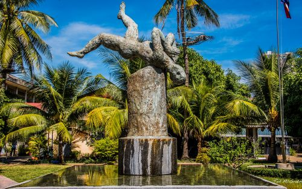
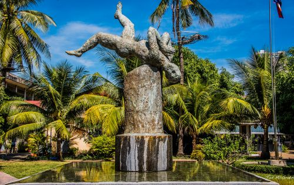

Toul Sleng Museum
The Tuol Sleng Genocide Museum preserves the history of Cambodia during the Khmer Rouge period. Once a high school, it now serves as a memorial to honor the victims and educate visitors about the country’s past.
The Tuol Sleng Genocide Museum preserves the history of Cambodia during the Khmer Rouge period. Once a high school, it now serves as a memorial to honor the victims and educate visitors about the country’s past.
